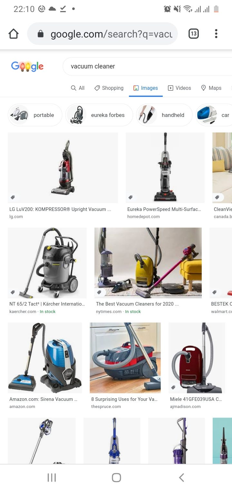

Cleaning the internet

I posted some articles about 404 pages and their impact on visitor Experience and energy waste. I think we should do our best to clean them out of the world wide web. Why not a 404 search engine and fixer? That the question I asked myself and I just figure out the best answer was to build one and to reward those websites who do their best for deleting 404 links on their websites. I have no revenue plan for this just for the sake of having a cleaner and energy-friendly internet. Will soon make this engine that can be seen as a vacuum cleaner for the internet. Hope you will support with your effort because cleaning the www matters a lot.
